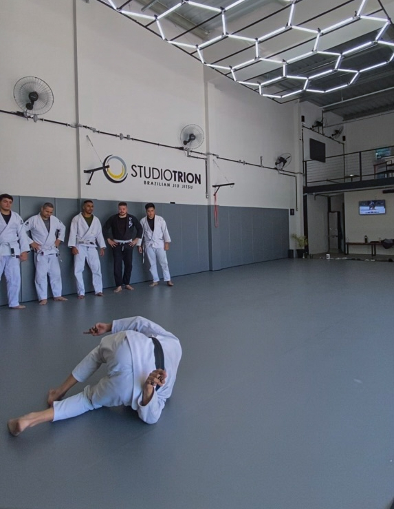
Nunca treinou
Começar
Você recebe orientação para compreender as posições e participar da aula mesmo sem experiência prévia.
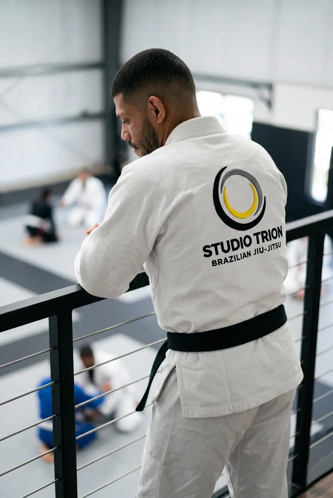
Faixa preta · Professor na Trion · Rio de Janeiro
Treino técnico, progressivo e orientado para quem quer aprender jiu-jitsu com seriedade, sem precisar chegar pronto ou viver uma rotina de atleta.
Como ensino
Jiu-jitsu não é só memorizar movimentos. A técnica precisa fazer sentido dentro da posição, da reação do adversário e do objetivo que você está tentando alcançar.
Você identifica a posição, o objetivo e os pontos que realmente importam antes de tentar executar o movimento.
Aprende a organizar base, peso, espaço e conexão antes de acelerar ou depender de força.
Repete a técnica com orientação, recebe correções e começa a executá-la com resistência progressiva.
Testa o que aprendeu em situações de treino e começa a reconhecer sozinho quando e como usar cada solução.
Aprendizado
Evoluir no jiu-jitsu não é decorar mais golpes. É entender melhor o que está acontecendo.
Primeira aula
A aula experimental é uma oportunidade para conhecer o treino, a turma e a forma de ensino antes de decidir continuar. Não é necessário ter experiência anterior nem esperar estar em melhor condicionamento para começar. Se você já treinou e está há algum tempo longe do tatame, também não precisa voltar no mesmo ritmo em que parou.

Nunca treinou
Você recebe orientação para compreender as posições e participar da aula mesmo sem experiência prévia.
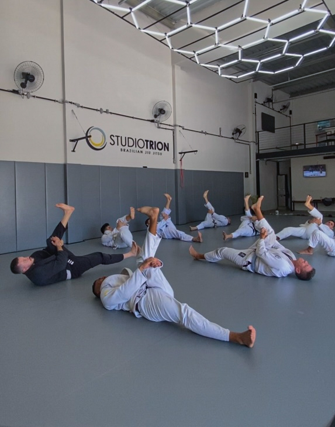
Já treinou
Se o jiu-jitsu já fez parte da sua vida, você pode retomar o treino progressivamente e reconstruir seu ritmo no tatame.
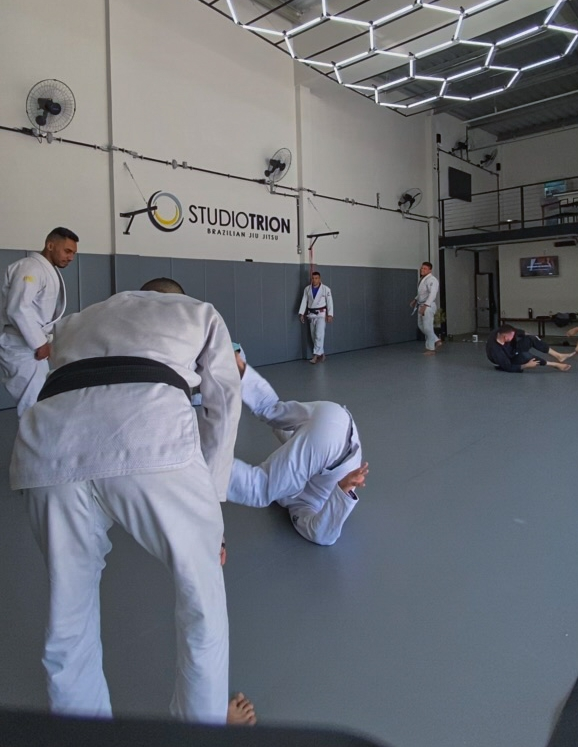
Durante a aula
Demonstração, prática, correção e resistência progressiva ajudam você a entender quando e como usar cada movimento.
Trajetória
Comecei a treinar jiu-jitsu aos 16 anos. Depois de um período longe do tatame, voltei ainda como faixa azul querendo aprender com mais eficiência e acelerar minha evolução técnica.
Comecei a pesquisar outras formas de estudar jiu-jitsu, e uma das referências que me chamou atenção foi Caio Terra. A partir daí, passei a organizar meu próprio aprendizado quase como quem organiza as matérias de uma prova: mapear o que eu já sabia, o que ainda precisava aprender e como as posições se conectavam antes de simplesmente acumular mais golpes.
Essa organização não substituía o treino. Ela servia para chegar ao tatame sabendo melhor o que estudar, onde estavam minhas lacunas e qual seria a próxima progressão. Com o tempo, fui refinando esse sistema enquanto continuava treinando até chegar à faixa preta.
Também dei aulas para crianças no Colégio CEAM e para adultos na Academia Marcio Rodrigues. Hoje, na Trion, essa trajetória influencia diretamente a forma como ensino: menos movimentos soltos e mais compreensão de posição, controle, reação e progressão.
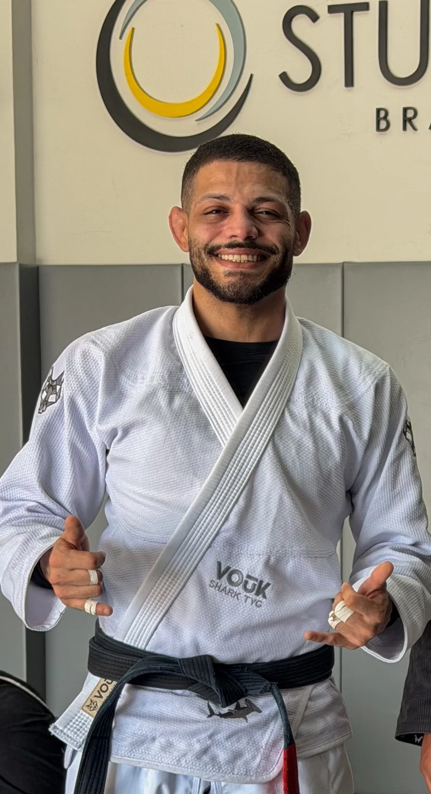
Relatos dos alunos
Este espaço reúne relatos reais de alunos sobre as aulas e o processo de aprendizagem. Os primeiros relatos serão publicados aqui conforme forem enviados e autorizados.
Primeiro relato em breve.
Espaço reservado para relato de aluno.
Espaço reservado para relato de aluno.
Treina ou já treinou comigo?
Você pode compartilhar como tem sido sua experiência nas aulas.
Momentos
Registros das aulas, dos alunos e do dia a dia na Trion. Toque numa foto para ampliar.
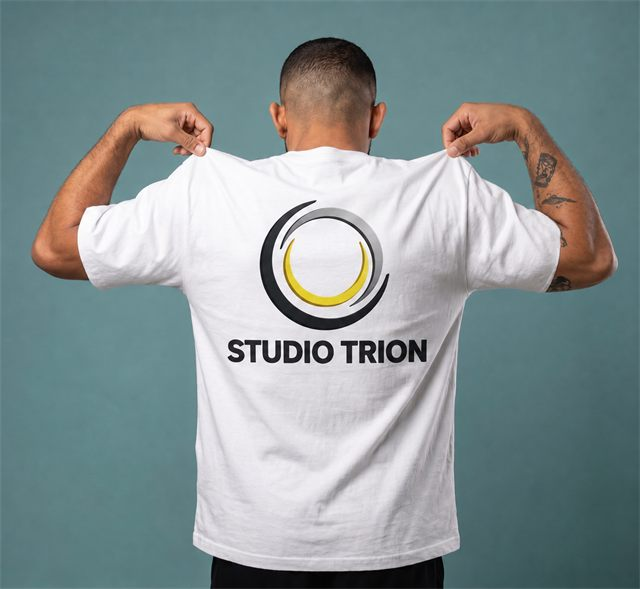
01 02
02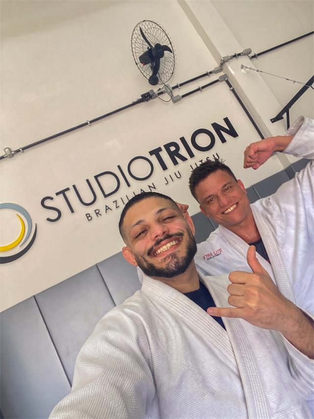
03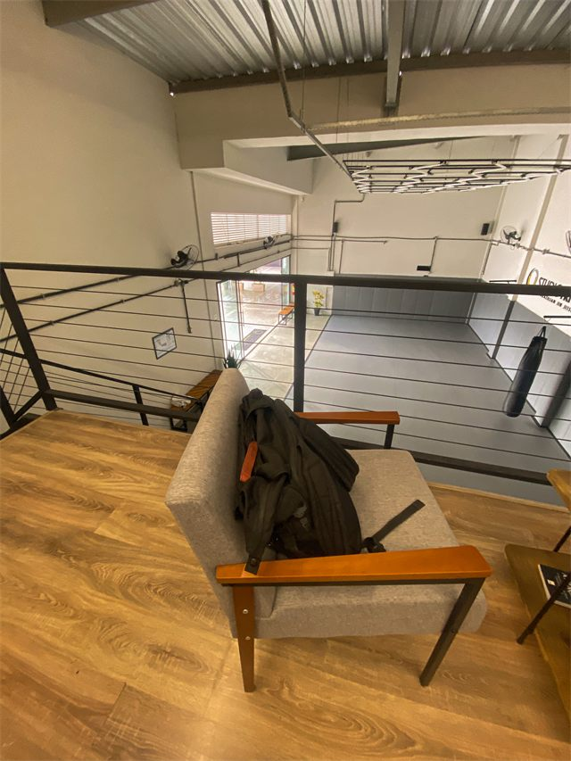
04 05
05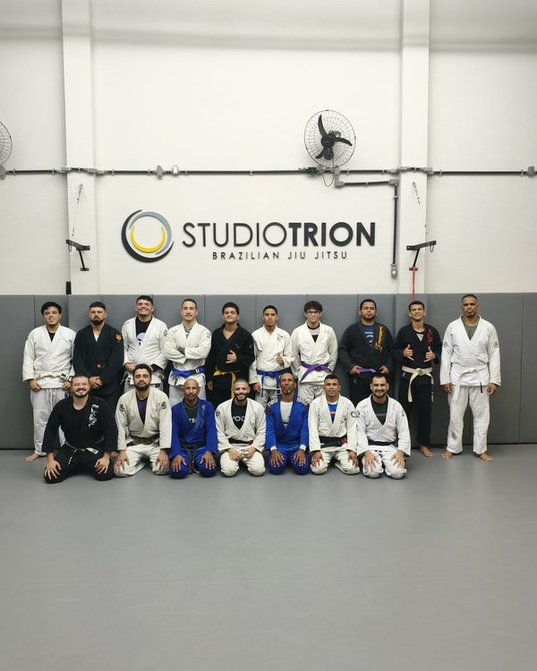
06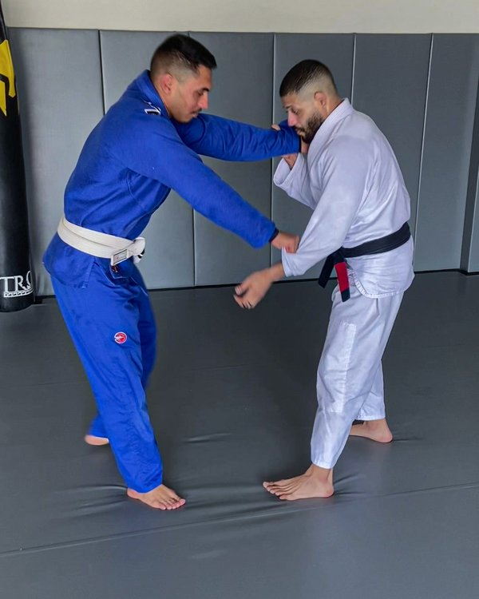
07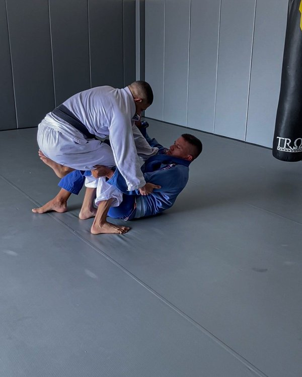
08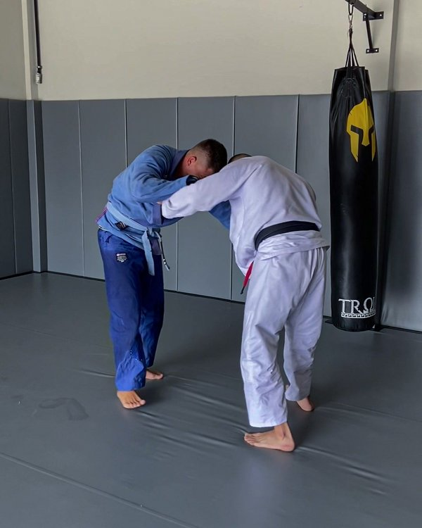
09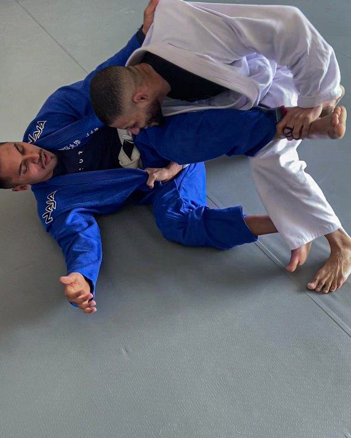
10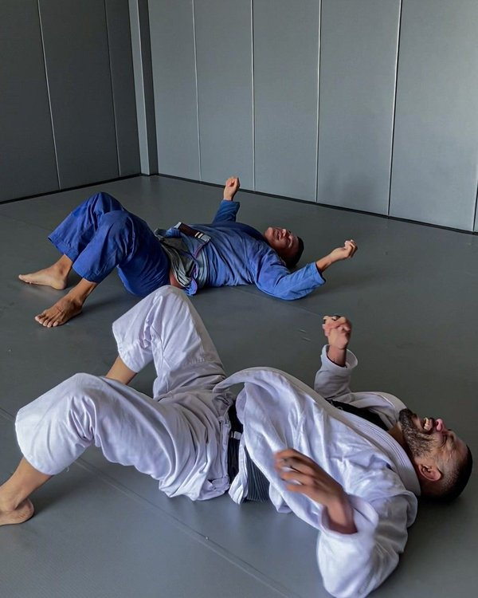
11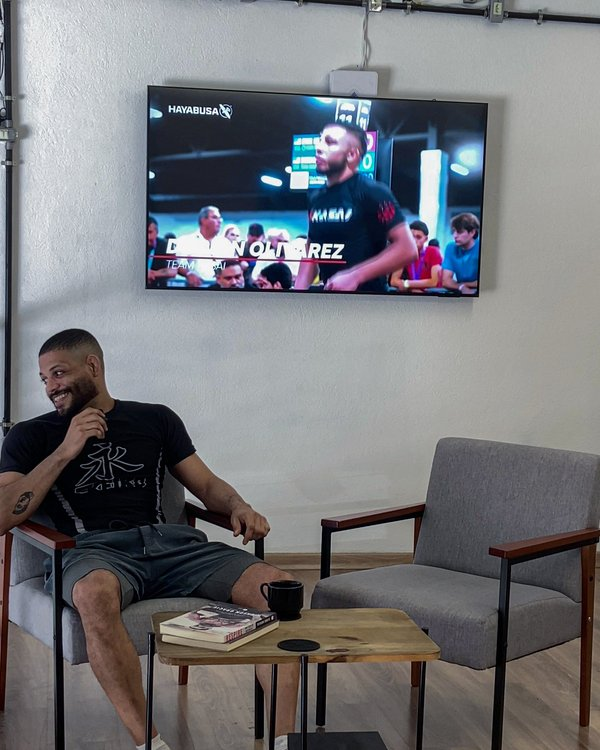
12Treinos presenciais
As aulas acontecem na Trion, no Anil, Rio de Janeiro. Se você está pensando em treinar, pode conhecer o espaço, conversar comigo e fazer uma aula experimental antes de decidir continuar.
Studio Trion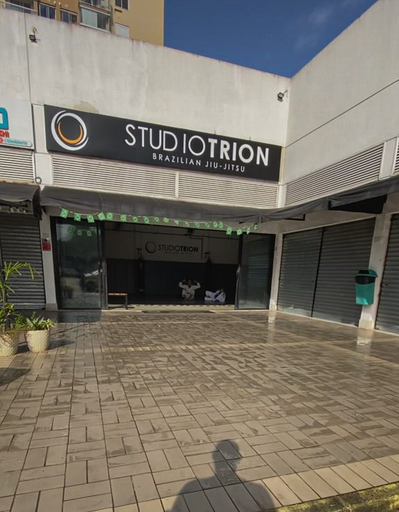